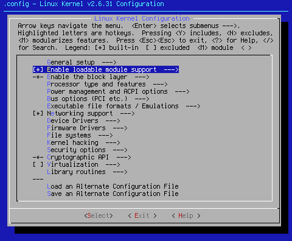
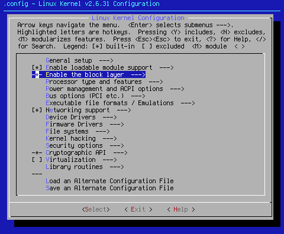

On the previous page, I discussed the first group of Kernel Seed settings. While the group of settings I will discuss on this page cover more than one literal page in make menuconfig, I am lumping them together in this document to keep the total number of pages at this site down to a minimum.
Arrow key down to the next area on the make menuconfig menu:
[*] Enable loadable module support --->

As you can see, the kernel seed defaults to using kernel modules. While I personally prefer monolithic kernels, there are times that a module is the preferred driver. In some cases, namely wireless networking, modules are a must.
When you hit <Select> at this point, you will bring up the following options:
[ ] Forced module loading
[*] Module unloading
[ ] Forced module unloading
[ ] Module versioning support
[ ] Source checksum for all modules
 Note that the use of [ ] Forced module loading is not recommended, and will taint the kernel. According to < Help >, "Allow loading of modules without version information (ie. modprobe --force). Forced module loading sets the 'F' (forced) taint flag and is usually a really bad idea." For this reason, this setting defauls to off, and should stay that way.
Note that the use of [ ] Forced module loading is not recommended, and will taint the kernel. According to < Help >, "Allow loading of modules without version information (ie. modprobe --force). Forced module loading sets the 'F' (forced) taint flag and is usually a really bad idea." For this reason, this setting defauls to off, and should stay that way.
[*] Module unloading
[ ] Forced module unloading
Use these settings if you desire to unload modules from memory when they aren't being used. While these two settings are generally benign, the use of [ ] Forced module unloading is not recommended. In some cases, attempting to force the unloading of modules can cause soft locks lasting multiple minutes.
[ ] Module versioning support
Turning this setting on allows you to use kernel modules compiled from different kernel versions. Even on its face, this is a bad idea as far as I can see. I can't really think of an need for such a thing. This setting defaults to off.
[ ] Source checksum for all modules
This setting is mostly used for troubleshooting the source files used to create a module. Most people will have no interest in this setting. For that reason, this setting defaults to off.
< Exit > out of [*] Enable loadable module support ---> and arrow down to:

-*- Enable the block layer --->
According to < Help >: If this option is disabled, block device files will become unusable, and some filesystems (such as ext3) will become unavailable. That's probably why this option is "hardwired" into the kernel.
When you <Select> at this point, you bring up the following options:--- Enable the block layer
[ ] Block layer SG support v4
[ ] Block layer data integrity support
IO Schedulers --->
< Help > says,"This option is required by recent UDEV versions to properly access device serial numbers, etc." I am currently experimenting with these settings. For now the [ ] Block layer SG support v4 and [ ] Block layer data integrity support settings default to off.
Move down to IO Schedulers ---> and <Select>. You will see the following options:
< > Anticipatory I/O scheduler
< > Deadline I/O scheduler
<*> CFQ I/O scheduler
Default I/O scheduler (CFQ) --->
<*> CFQ I/O scheduler is the default setting.
Move down to Default I/O scheduler (CFQ) --->and <Select>. You will see the following options:
(X) CFQ
( ) No-op
Choose either the default I/O scheduler, or any of the other allowed options. The default for this setting is the option chosen under I/O schedulers --->.
The next group of settings, Processor type and features ---> will be discussed on Page 3.

Cheers,
Pappy